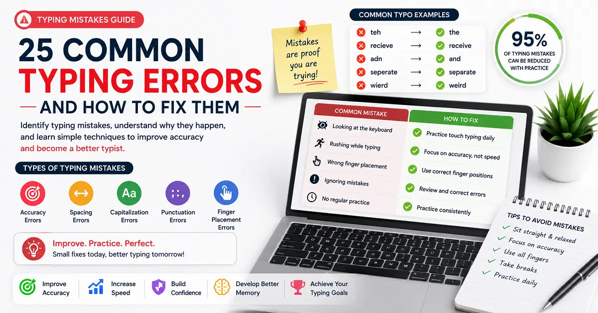
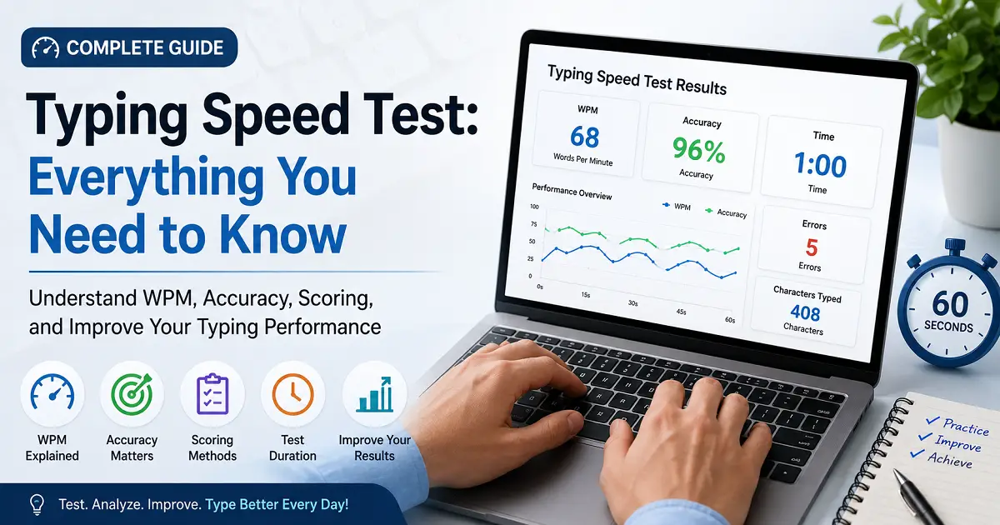
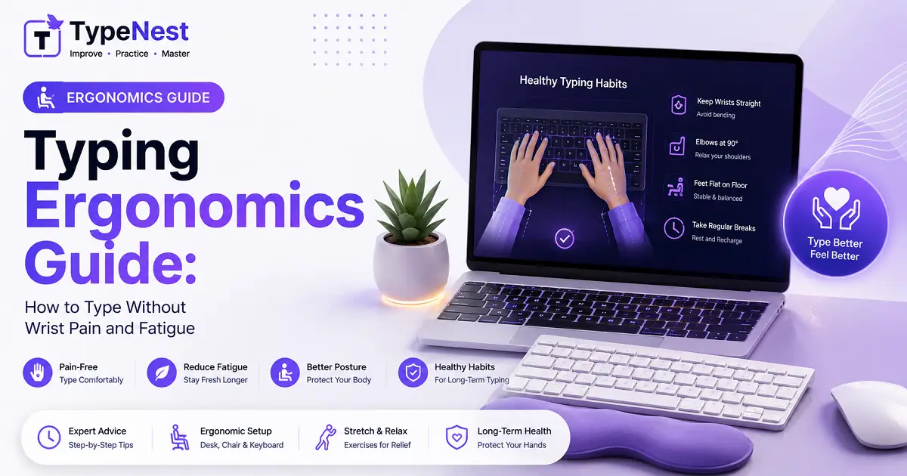
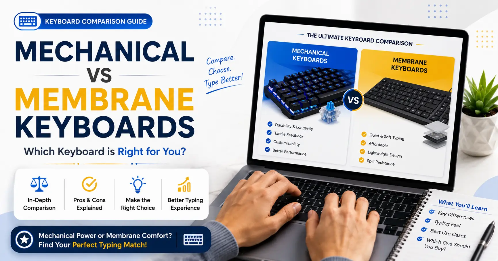
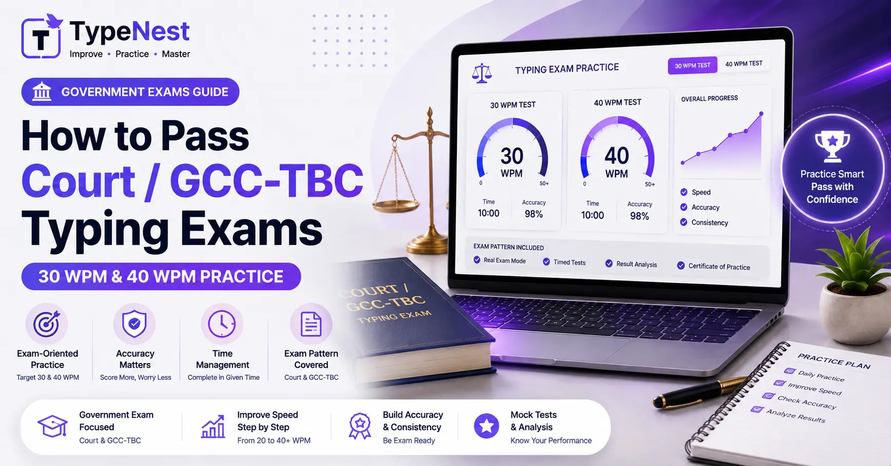
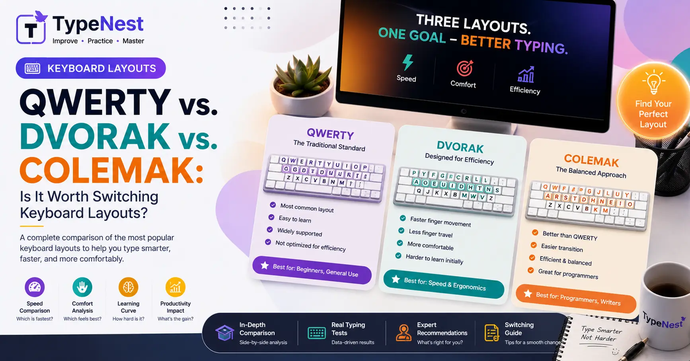
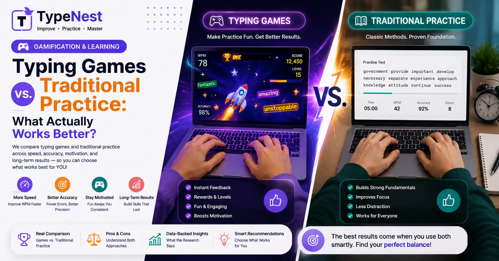
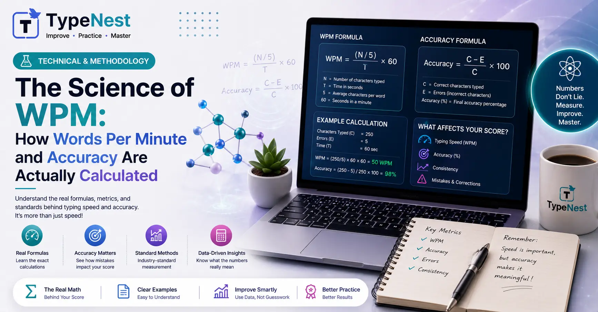
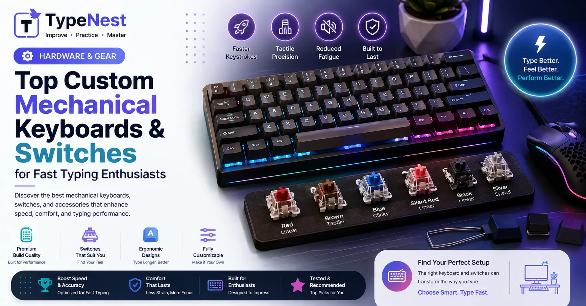
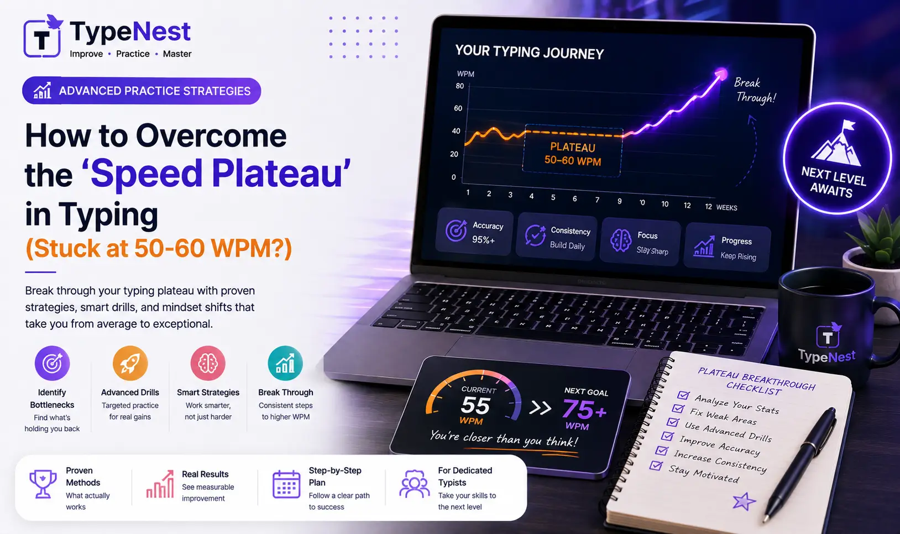

Complete Guide to Increase Typing Speed
Learn proven techniques, daily practice routines, and expert tips to increase your typing speed while maintaining excellent accuracy and long-term consistency.
Explore expert-written guides on touch typing, typing speed, accuracy, keyboard shortcuts, productivity, web development, and technology. Learn practical skills with beginner-friendly tutorials designed to help you type faster, work smarter, and build confidence.

Learn proven techniques, daily practice routines, and expert tips to increase your typing speed while maintaining excellent accuracy and long-term consistency.

Find out what is considered a good typing speed, compare WPM by age and profession, and set realistic typing goals.

Discover how to improve typing accuracy, reduce mistakes, and develop reliable keyboard skills through structured practice.

Master touch typing with proper finger placement, home row keys, and practical exercises to type confidently.

Learn why typing mistakes happen, how to fix common errors, and build better typing habits for long-term improvement.

Prepare for government typing exams with official speed requirements, practice strategies, qualification rules, and exam-day preparation tips.

Learn how typing speed tests work, understand WPM and accuracy scores, and discover practical ways to measure and improve your typing performance.

Save time with essential Windows keyboard shortcuts for editing, navigation, productivity, and everyday computer tasks.

Compare the best free typing websites, their features, lessons, typing tests, and practice tools to choose the perfect learning platform.

Discover essential typing ergonomics to eliminate hand fatigue, prevent wrist pain, and design a comfortable workspace for typing health.

An in-depth showdown between mechanical switches and classic membrane domes. Find out how your hardware impacts your speed, accuracy, and muscle memory.

Discover why children should learn touch typing early, fun ways to practice, proper finger placement, and how this essential digital skill improves academic performance, confidence, and future career success.

Discover how fast typing and touch typing skills boost coding productivity, reduce cognitive load, preserve the flow state, and accelerate software development workflows for developers.
Uncover the neuroscience behind touch typing. Learn how your brain builds muscle memory, sends subconscious motor signals to your fingers, and enhances mental focus to minimize typing errors.
Master 10-key numeric keypad touch typing for data entry, accounting, and banking jobs. Learn home row finger positioning, blind typing techniques, and accuracy tips.

Master Marathi and English GCC-TBC speed requirements, Bombay High Court exam formats, accuracy evaluation rules, and passage practice techniques.

Tired of QWERTY finger strain? Explore how Dvorak and Colemak redesign typing ergonomics, boost speed potential, and whether making the switch is right for you.

Wondering what WPM speed remote employers actually expect? Discover benchmark typing requirements for Data Entry, Virtual Assistants, Customer Support, and Software Engineering.

Can arcade typing games really make you faster, or are classic drills still king? Discover the science of gamified typing and how to combine both for maximum speed gains.

Ever wondered how typing software measures your speed? Uncover the math behind Standard Words, Gross vs Net WPM, Keystrokes Per Hour (KPH), and accuracy formulas.

Looking to upgrade your typing gear? Discover the best mechanical key switches (Linear vs Tactile vs Clicky), hot-swappable boards, and keycap profiles for ultimate typing speed and ergonomics.

Stuck at 50 or 60 WPM no matter how much you practice? Learn proven cognitive techniques, finger hesitation fixes, and burst drills to break your plateau and hit 80+ WPM.
Login to continue your typing journey.